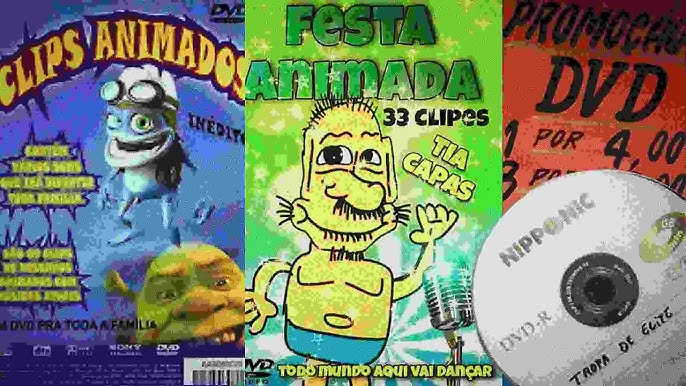
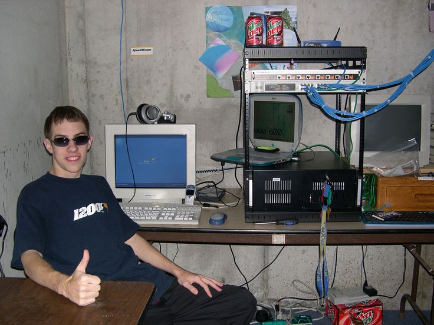
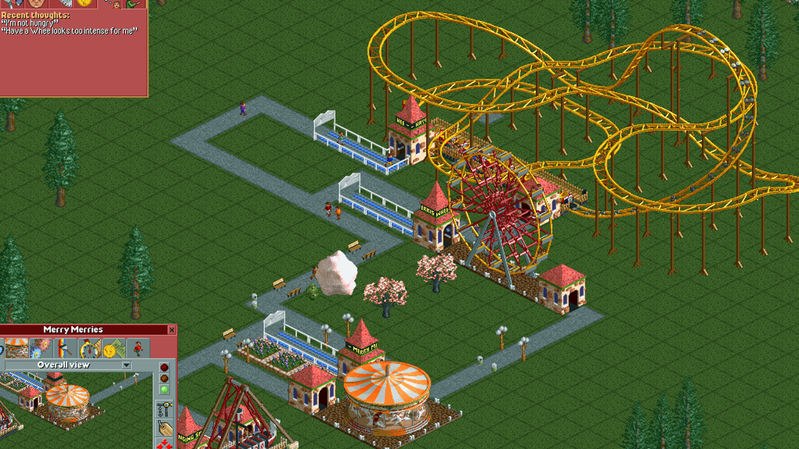

Destaque
Por que programadores deveriam assistir The Social Network
O que um filme sobre ambição, poder e ego pode ensinar sobre tecnologia — e sobre a alma por trás de cada linha de código.
Ensaios recentes
A psicologia por trás de Boyhood
Como Richard Linklater capturou doze anos de crescimento e transformou o tempo em personagem.
24 Abril 2024
O dilema da pirataria no Brasil
Entre acesso à cultura e direitos autorais, onde fica a linha moral de quem não pode pagar?
25 Abril 2024
Por que coisas antigas são legais
Nostalgia, patina e o paradoxo de amar o que não é seu — por que o passado sempre parece melhor.
26 Abril 2024
A genialidade dos jogos tycoon
Por que simular uma economia fictícia é uma das experiências mais viciantes da história dos games.
27 Abril 2024